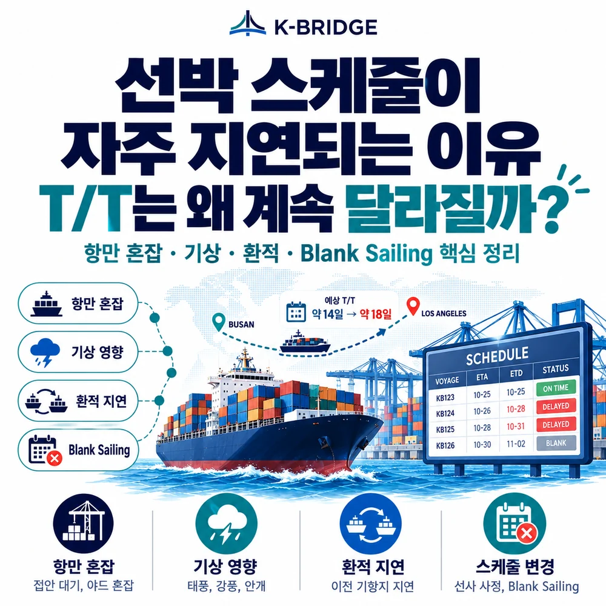
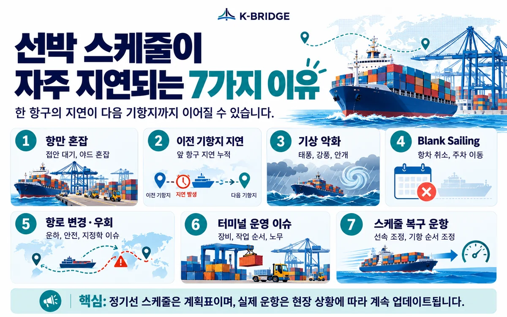
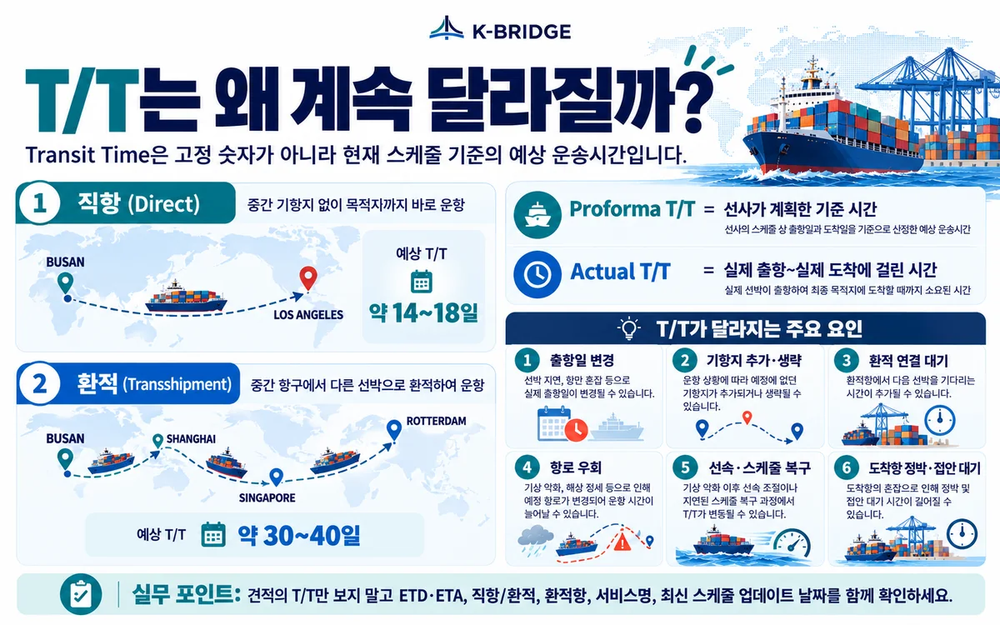

먼저 결론부터
선박 스케줄은 열차 시간표처럼 고정된 값이 아니라 여러 항만을 순환하는 하나의 네트워크 일정입니다. 앞 항구에서 2일 늦어지면 그 지연이 다음 기항지로 이어질 수 있고, 항만 혼잡·기상·환적 연결·Blank Sailing·항로 변경이 겹치면 ETD와 ETA가 계속 수정됩니다. 따라서 T/T(Transit Time)는 보통 당시 스케줄 기준의 예상 운송시간으로 이해하고, 최신 ETD·ETA와 직항/환적 구조를 함께 확인하는 것이 중요합니다.
1. T/T(Transit Time)란 무엇인가?
직접 답변: 해상운송에서 T/T는 보통 출발항에서 도착항까지 걸리는 예상 운송시간을 뜻합니다.
예를 들어 선사가 부산 출항 후 로스앤젤레스 도착까지 15일로 안내한다면 “T/T 15일”이라고 표현합니다. 다만 실무에서는 견적서·선사·서비스에 따라 기준점이 조금 다를 수 있으므로 Port-to-Port인지, 직항인지 환적인지, 어느 항차 기준인지를 함께 확인해야 합니다.
중요한 점은 T/T가 법적으로 고정된 도착 보증시간을 뜻하는 것은 아니라는 점입니다. 선사 웹사이트의 스케줄은 보통 Proforma Schedule(계획 스케줄)을 바탕으로 만들어지고, 실제 운항상황이 반영되면서 ETD·ETA와 함께 변경될 수 있습니다.

2. 선박 스케줄이 자주 지연되는 7가지 이유
선박 지연은 한 가지 원인보다 여러 원인이 겹쳐 발생하는 경우가 많습니다. 2026년 9월 Hapag-Lloyd도 날씨 중단, 지역 항만 혼잡, 장비 부족, 운하 통항 제약 등이 동시에 네트워크 유연성을 떨어뜨려 긴 리드타임과 스케줄 조정을 만들고 있다고 안내했습니다.
항만 혼잡 - 선박이 도착해도 바로 접안하지 못합니다
터미널에 선박이 몰리거나 야드가 포화되면 배가 항만 앞에서 정박한 채 순서를 기다립니다. 접안이 늦어지면 하역·선적이 늦어지고 ETD까지 함께 밀립니다.
이전 기항지 지연 - 지연이 다음 항구까지 이어집니다
정기 컨테이너선은 한 항구만 왕복하는 것이 아니라 여러 항만을 순서대로 기항합니다. 앞 항구에서 2~3일 지연되면 다음 항구의 ETA·ETD도 함께 움직이는 구조입니다. CMA CGM의 2026년 9월 지연 공지에서도 이전 항만의 혼잡·운영상 문제가 이후 전체 스케줄 조정으로 이어진 사례가 확인됩니다.
기상 악화 - 태풍·폭풍·안개는 입출항과 하역을 멈춥니다
강풍이나 높은 파고가 발생하면 항만이 작업을 제한하거나 선박이 안전을 위해 감속·우회할 수 있습니다. 출항을 했더라도 바다에서 선속을 낮추면 도착일은 다시 변할 수 있습니다.
Blank Sailing·Voyage Slide - 항차 자체가 조정될 수 있습니다
Blank Sailing은 예정된 항차가 취소되거나 해당 주차의 선박 투입이 빠지는 것을 말합니다. Voyage Slide는 항차를 다음 주차로 미루는 형태의 조정입니다. 2026년 9월 25일 Drewry는 주요 동서항로에서 9월 28일~11월 1일 사이 712개 예정 항차 중 58개가 Blank Sailing으로 예상된다고 집계했습니다.
항로 변경·우회 - 안전과 운하 상황에 따라 실제 거리가 달라집니다
운하 통항 제한, 지역 분쟁, 항행 안전 문제로 우회하면 항해거리가 늘어날 수 있습니다. 2026년에도 홍해·수에즈 운항은 서비스별로 복귀 속도가 달라 동일한 아시아-유럽이라도 선사·서비스마다 T/T가 다를 수 있습니다.
터미널·장비·운영 이슈 - 배가 있어도 작업이 늦어질 수 있습니다
선석 배정, 크레인·야드 장비, 노무, 화물 적재순서, 컨테이너 장비 수급이 맞지 않으면 실제 작업시간이 늘어납니다. Hapag-Lloyd는 장비 부족 역시 2026년 9월 글로벌 화물 흐름을 방해하는 요인으로 안내했습니다.
스케줄 복구 - 선사가 일부 항차를 비우거나 기항지를 바꾸기도 합니다
지연이 너무 많이 누적되면 선사는 Schedule Recovery를 위해 특정 항차를 비우거나 선박 위치를 재배치하고, 기항 순서를 조정할 수 있습니다. Maersk는 2026년 6월 누적 지연과 항만 대기에 대응해 한 서비스의 선박 포지션을 Blank 처리해 스케줄을 리셋한 사례를 공지했습니다.
3. 왜 앞 항구의 지연이 우리 선적까지 영향을 줄까요?
정기선은 하나의 선박이 여러 항만을 연속해서 순환하기 때문입니다.
예를 들어 상하이 → 닝보 → 부산 → 로스앤젤레스 순으로 운항하는 배가 상하이에서 이틀 늦게 출항했다고 가정해보겠습니다. 닝보에서 곧바로 만회하지 못하면 부산 입항도 늦어지고, 부산에서 예정된 화물의 선적·출항일도 함께 밀립니다.
이런 누적을 업계에서는 흔히 Ripple Effect(파급 지연)로 설명합니다. Maersk도 2026년 2월 기상으로 인한 작은 운영 차질이 네트워크에서 연쇄적으로 커질 수 있다고 설명하며 스케줄 안정화를 위해 항차 조정을 시행했습니다.
고객이 기억하면 쉬운 한 문장
“내 화물이 있는 항구에 문제가 없어도, 그 배가 전에 다녀온 항구에서 늦어지면 우리 스케줄도 늦어질 수 있습니다.”

4. T/T는 왜 견적마다, 날짜마다 계속 달라질까요?
T/T는 “거리 ÷ 선박 속도”만으로 결정되는 숫자가 아닙니다. 선사 서비스의 기항 구조와 실제 운항상황이 바뀌면 T/T도 바뀝니다.
| 변수 | T/T가 달라지는 이유 | 고객이 확인할 것 |
|---|---|---|
| 직항 / 환적 | 환적은 중간 항만 대기와 연결선 시간이 추가됩니다. | Direct인지 T/S인지 |
| 기항지 수 | 같은 도착항이어도 중간 기항지가 많으면 전체 시간이 길어집니다. | Port Rotation |
| 출항일 변경 | Voyage Slide나 선박 교체가 발생하면 기준 스케줄 자체가 바뀝니다. | 최신 ETD·Voyage |
| 환적 연결 | 1차 선박이 늦으면 예정된 2차 선박을 놓쳐 다음 연결선을 기다릴 수 있습니다. | 환적항·연결선 ETA/ETD |
| 항로 변경 | 운하·안전·기상 문제로 우회하면 실제 항해거리가 증가합니다. | Routing·Service Update |
| 선속 조정 | 스케줄 회복, 연료효율, 기상 대응을 위해 속도를 조정할 수 있습니다. | 현재 Vessel Position |
| 도착항 대기 | 목적항까지 왔어도 정박 대기 중이면 실제 접안·하역은 늦습니다. | ETA뿐 아니라 Berthing 상태 |
특히 환적 화물: “부산→싱가포르까지 정상”이어도 싱가포르에서 다음 선박 연결을 놓치면 최종 T/T가 며칠에서 일주일 이상 달라질 수 있습니다. 환적은 전체 항로가 아니라 연결선까지 확인해야 합니다.
5. ETD·ETA·ATD·ATA, 이것만 구분해도 스케줄이 훨씬 잘 보입니다
| 용어 | 의미 | 쉽게 말하면 |
|---|---|---|
| ETD | Estimated Time of Departure | 예상 출항일·출항시각 |
| ETA | Estimated Time of Arrival | 예상 도착일·도착시각 |
| ATD | Actual Time of Departure | 실제로 출항한 시각 |
| ATA | Actual Time of Arrival | 실제로 도착한 시각 |
| T/T | Transit Time | 출발~도착 사이 예상 운송시간 |
ETD와 ETA는 “Estimated”, 즉 예상값입니다. 배가 실제로 출항하면 ATD가 확인되고, 실제 도착하면 ATA가 생깁니다. 따라서 출항 전에는 ETA가 여러 차례 변경되는 것이 이상한 일이 아닙니다.
6. 2026년 현재 선박 스케줄은 실제로 얼마나 자주 늦어질까요?
9월 28일 현재 확인 가능한 Sea-Intelligence의 최신 공개 월간 자료는 2026년 7월 실적입니다. 글로벌 컨테이너선 Schedule Reliability는 56.4%로 내려갔고, 늦게 도착한 선박의 평균 지연은 6.06일이었습니다.
Sea-Intelligence는 이 하락의 주요 배경으로 아시아 주요 항만 혼잡을 지목했습니다. 14개 주요 아시아 항만 모두 정시 도착률이 악화됐고, 상하이는 7월 정시 도착률이 21.0%로 떨어졌다고 분석했습니다.
또한 Drewry의 9월 25일 Blank Sailing Tracker에서는 9월 28일~11월 1일 주요 동서항로의 예정 항차 712개 중 58개, 약 8%가 취소될 것으로 전망했습니다. 즉, “왜 요즘 스케줄이 자꾸 바뀌나요?”라는 고객 체감은 실제 시장 데이터와도 연결돼 있습니다.
숫자를 이렇게 이해하세요
정시성 56.4%는 모든 선박이 평균 6일 늦는다는 뜻이 아닙니다. 정시 도착 여부와 늦은 선박의 평균 지연은 서로 다른 지표입니다. 항로·선사·서비스마다 실제 신뢰도는 크게 다를 수 있습니다.
7. 견적·부킹할 때 T/T보다 함께 봐야 할 체크리스트
- ETD·ETA 기준일: 견적 받은 날짜가 오래됐다면 최신 스케줄을 다시 확인합니다.
- 직항 / 환적: 같은 T/T라도 환적 서비스는 연결선 리스크가 있습니다.
- 서비스명·Voyage: 선사만 같아도 서비스와 항차가 다르면 기항 순서가 다릅니다.
- Port Rotation: 출발항과 도착항 사이에 몇 개 항만을 들르는지 확인합니다.
- Blank Sailing / Port Omission: 항차 취소나 기항 생략 공지가 있는지 확인합니다.
- 실시간 선박 위치: 출항 후에는 AIS 위치와 최신 ETA를 함께 확인합니다.
- 납기 버퍼: 전시회·공사·생산라인처럼 납기 실패 비용이 큰 화물은 가장 짧은 T/T보다 안정적인 서비스와 여유 일정을 우선합니다.
KEY TAKEAWAYS
이 글에서 기억할 것
- 2026년 7월 정시성 56.4%
- 늦은 선박 평균 지연 6.06일
- 9/28~11/1 Blank Sailing 58회 예정
- T/T는 최신 스케줄에 따라 변동
8. 자주 묻는 질문
Q. 선사가 처음 알려준 T/T가 바뀌면 잘못된 안내였던 건가요?
Q. ETD가 이틀 늦어지면 ETA도 무조건 이틀 늦어지나요?
Q. 직항이면 스케줄 지연이 거의 없나요?
Q. Blank Sailing과 Vessel Delay는 같은 뜻인가요?
Q. T/T가 짧은 선사를 선택하면 항상 더 빨리 도착하나요?
Q. 화주는 스케줄 지연에 어떻게 대비하는 것이 좋나요?
NEXT STEP
이 글과 함께 보면 좋은 자료
가장 짧은 T/T보다, 실제로 지킬 수 있는 스케줄이 중요합니다
케이브릿지는 단순히 표기 T/T만 전달하지 않고 직항·환적 구조, 선사 스케줄, 최근 지연과 환적 연결까지 확인해 실제 납기에 맞는 운송계획을 검토합니다.